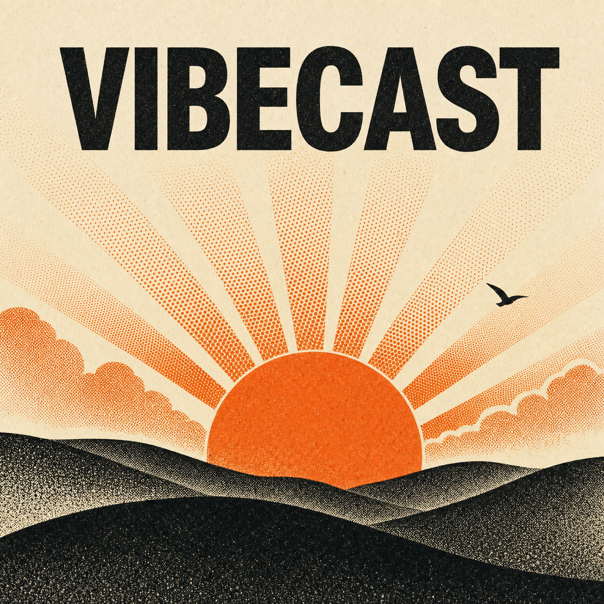

Opening Overcast…
Today's episode is at the top of the show.
If nothing happened, you may not have Overcast installed — the feed URL works in any podcast app.

Today's episode is at the top of the show.
If nothing happened, you may not have Overcast installed — the feed URL works in any podcast app.